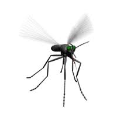
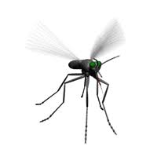

Este guia de bolso foi criado com muito cuidado por nós, Sara Egito e Roberta Gouvêa, da turma de Biotecnologia T16, como parte de uma atividade avaliativa da disciplina de Biossegurança — mas, acima de tudo, como uma forma de contribuir com algo que realmente importa. O Aedes aegypti é um velho conhecido que continua representando sérios riscos à saúde, e acreditamos que a informação é uma das melhores formas de prevenção. Nosso objetivo é tornar esse assunto mais próximo, simples e útil para quem lê, ajudando a identificar focos, entender o ciclo do mosquito e, quem sabe, fazer a diferença em casa, na escola ou na comunidade. Esperamos que este material informe, conscientize e inspire pequenas ações que salvam vidas.